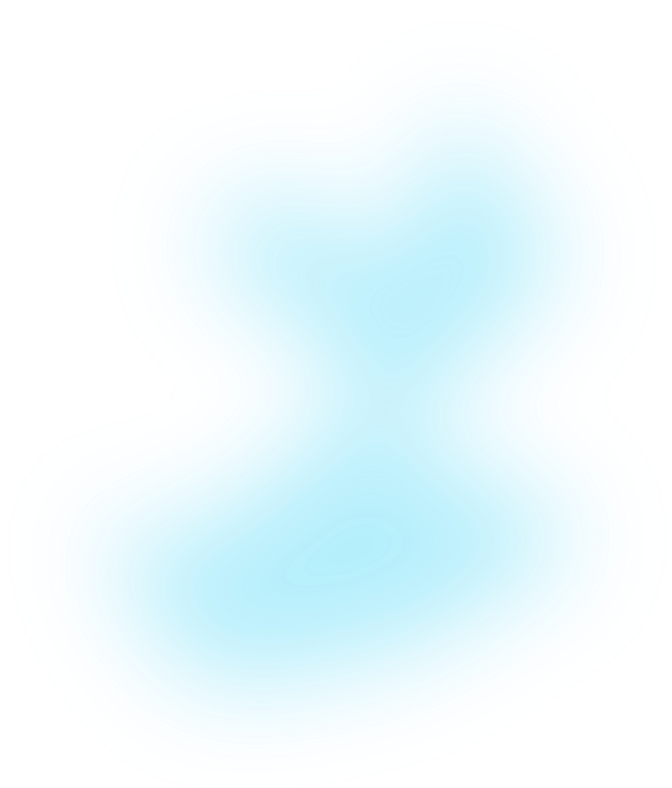
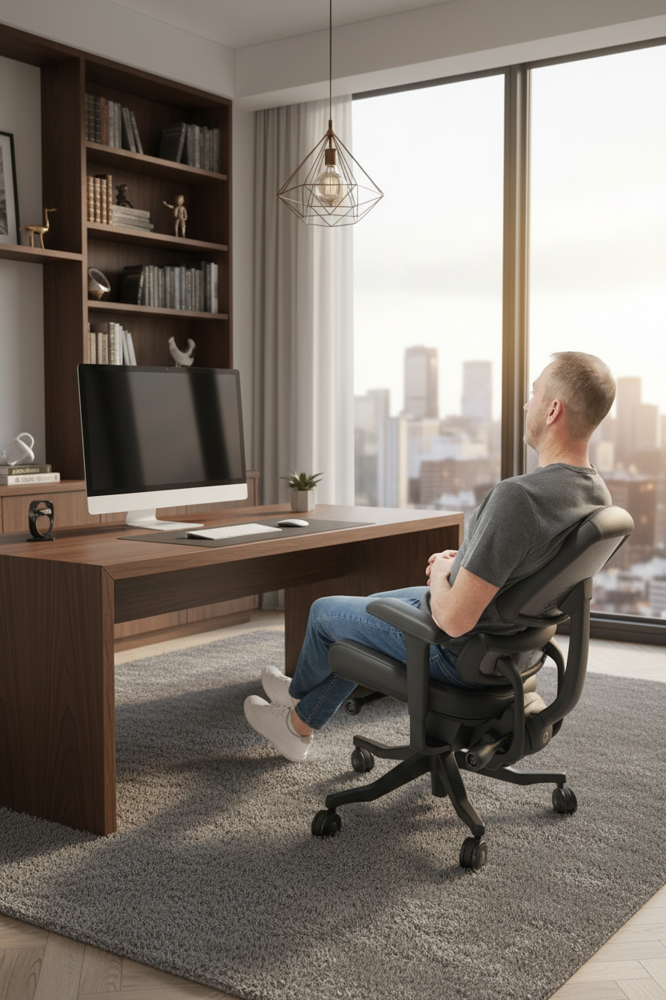
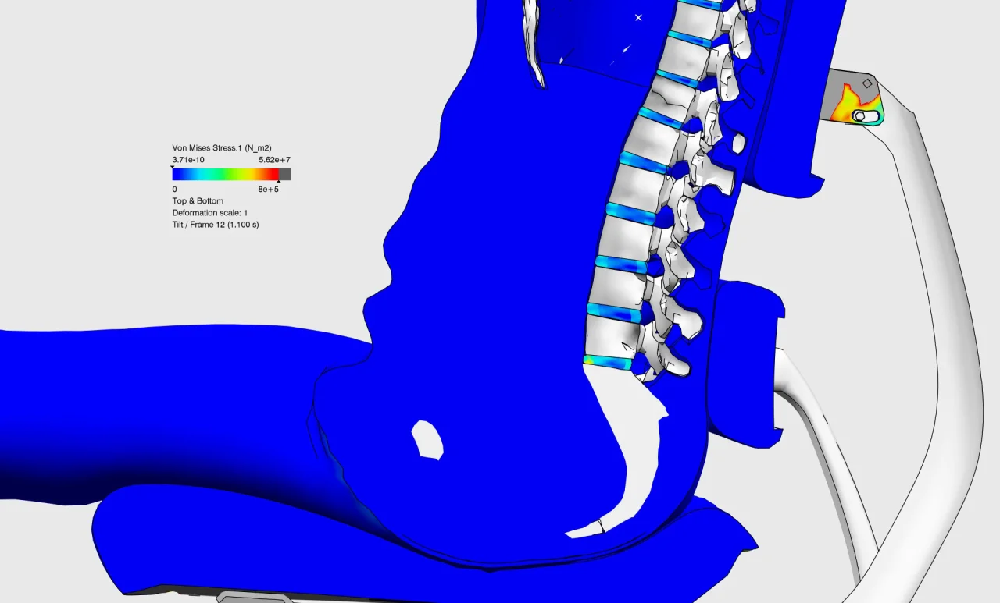

The Anthros Tilt System
Anthros now gives you five posture-preserving tilt options designed to match every preference, every task, and every moment of your day. Whether you sit upright, float as you work, or fully decompress on a break, each mode protects your spine and reduces fatigue.
Turn the front-left control knob forward to unlock your tilt.
Turn the front-right control knob backward to release tension. It may require extra force at first — this is normal and will loosen over time. Adjust until movement feels smooth and supportive.
When unlocked, the chair moves freely between –2° and 16°. This creates your two unlocked positions:
Range: –2° to ~8° (varies by user based on tension)
Use When:
Why They Love It:
You "float" between upright and a light tilt, maintaining ideal head position relative to your
monitor. This is one of the most functional decompressed working postures.

Range: Full 16° recline with tension loosened
Use When:
Why It Matters:
This mode offers maximum spinal decompression allows for a full stretch that feels
incredible.
Not for computer work as the head naturally shifts forward relative to the
screen.

Anthros offers three precise, posture-engineered locked tilt modes for when you prefer a fixed angle.
How to Lock Your Tilt
For the 5° Decompress Mode:
Lean all the way back → lock → gently lean forward.
The chair settles perfectly into the 5° decompress mode.


Best For:
What It Does:
Puts you slightly forward, ideal for precision work without collapsing posture.

Best For:
What It Does:
This is the default shipping position and is a stable, supported angle that keeps your body centered and aligned.

Best For:
What It Does:
Provides a subtle tilt that unloads gravity's downward pressure while maintaining exceptional spinal alignment and head position. A perfect compromise between upright and relaxed.
Use Active (–2°) or Standard (1°) Mode. You'll feel supported and centered. But remember, staying fully upright all day increases the downward pressure on your spine.
Switch to Free-Float or 5° Decompress Mode. These modes decrease gravitational pressure, improve circulation, and help reset posture without pulling your head off-axis from your screen.
Drop fully into Full Decompress Mode (16°). A restorative stretch that resets the spine and is perfect between meetings or while on calls.

Every Anthros tilt option is engineered to preserve posture, not collapse it. Whether you prefer structured support or gentle movement, the Anthros Tilt System adapts to you, not the other way around.


Have Questions? Schedule a posture consult with one of our licensed OT/PT’s.
Shop Now